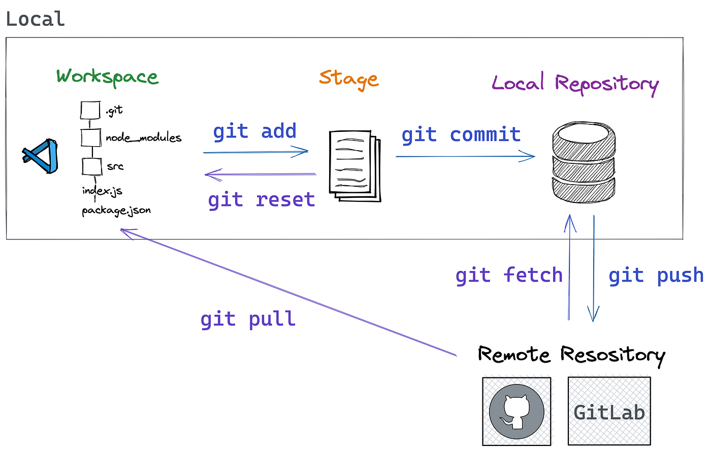

Git: el control de versiones que necesitas para tus proyectos

Git es un sistema de control de versiones distribuido que permite a los desarrolladores rastrear los cambios en sus archivos a lo largo del tiempo. Esto permite a los desarrolladores recuperar versiones anteriores de sus archivos, comparar cambios entre versiones, y colaborar con otros desarrolladores en el mismo proyecto.
GitHub es una plataforma web que aloja repositorios Git. GitHub proporciona una serie de herramientas y características que facilitan el uso de Git, incluyendo un interfaz de usuario web, herramientas de colaboración, y un sistema de seguimiento de problemas.
Aquí hay algunos ejemplos de cómo Git y GitHub se pueden utilizar:
- Un desarrollador puede utilizar Git para rastrear los cambios en su código fuente a medida que trabaja en un proyecto.
- Un equipo de desarrolladores puede utilizar Git para colaborar en un proyecto, compartiendo archivos y trabajando en las mismas versiones.
- Una empresa puede utilizar Git para gestionar su código fuente, manteniendo un registro de todas las versiones de su software.